Kopfrechnen, das sich deinem Kind anpasst.
8ctoMath ist Rechentraining für Kinder, auf dem Meeresgrund. Jedes Quiz ist ein Rennen über dreissig Aufgaben gegen den Tintenfisch Brainy. Die Stufe folgt deinem Kind von selbst, Rechnungen, die ihm schwerfallen, kommen öfter wieder, und ein guter Lauf bringt Sticker.
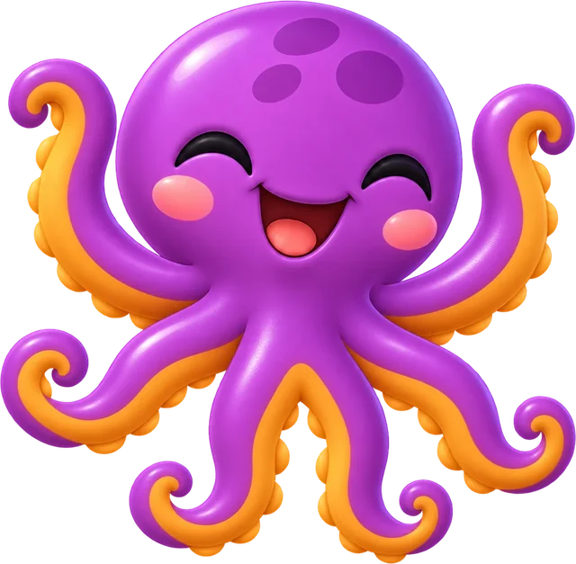
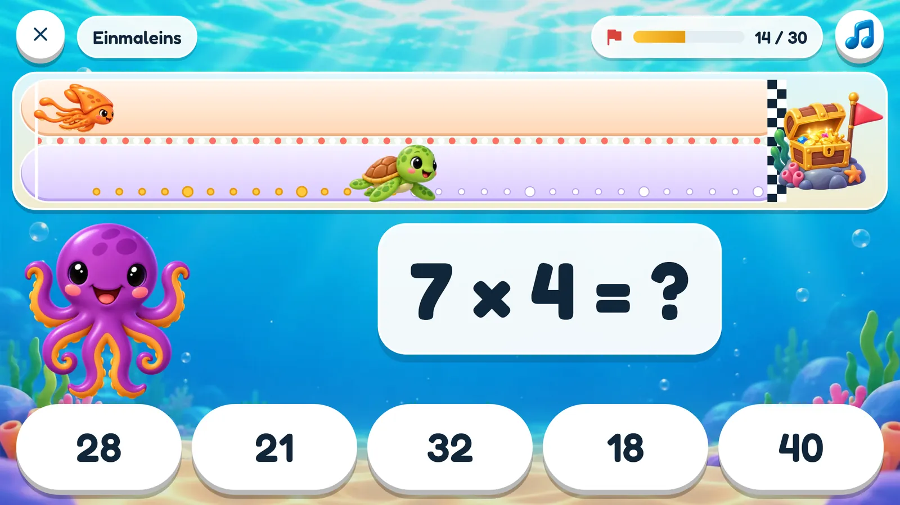
So läuft ein Quiz
Dreissig Aufgaben, eine Bahn über den Meeresgrund, am Ende eine Schatztruhe. Jede richtige Antwort ist ein Schwimmzug nach vorn, und der Tintenfisch Brainy schwimmt dieselbe Strecke.
Eine Aufgabe erscheint
Aus den Rechenarten, die ausgewählt sind, auf der Stufe, auf der dieses Kind gerade ist.
Die Antwort wählen
Fünf stehen zur Wahl. Die falschen sind Fehler, die Kinder wirklich machen, also muss man die richtige ausrechnen, nicht raten.
Vorschwimmen
Richtig, und das Tier deines Kindes macht einen Zug. Falsch, und die Lösung erscheint, bevor die nächste Aufgabe kommt.
Brainy schwimmt mit
Er braucht etwas länger, als dieses Kind sonst braucht. Wer ihn schlägt, hatte einen besseren Lauf als üblich.
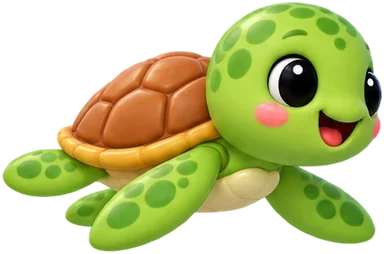
Dein Kind
Schwimmt als das Tier, das es sich selbst ausgesucht hat. Ein Zug für jede richtige Antwort.
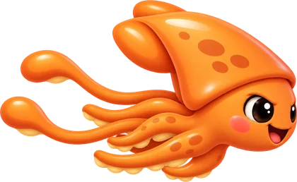
Brainy
Schwimmt in gleichmässigem Tempo, das sich nach den letzten Quiz dieses Kindes richtet.
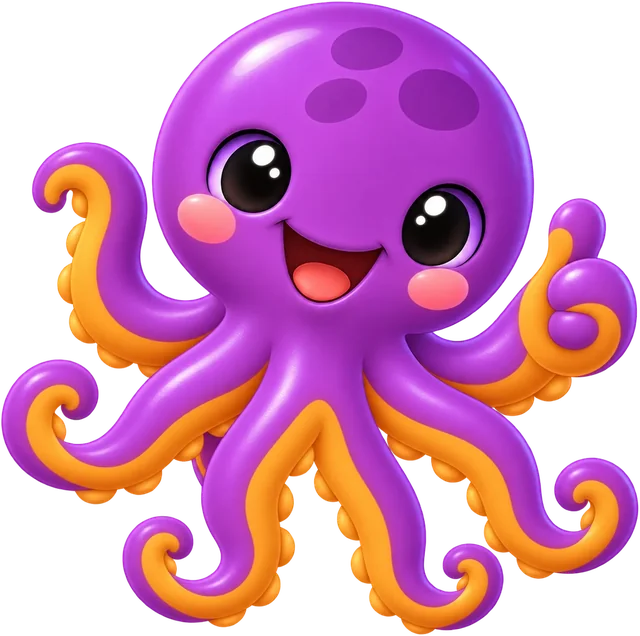
8cto ist der Trainer
Er wartet neben der Aufgabe, jubelt bei einer richtigen Antwort, leidet bei einer falschen mit und meldet sich, wenn ein Kind still geworden ist. Laut, auf Deutsch oder Englisch.
Fünf Rechenarten
Vor jedem Quiz lässt sich beliebig mischen, eine Rechenart oder alle fünf. Jede hat ihre eigene Stufe, so kann ein Kind im Plus weit sein und beim Geteilt gerade anfangen.
Plus
bis 10, 20, 100 und weiter
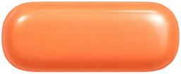
Minus
nie unter null
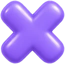
Einmaleins
Reihen bis 12
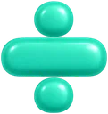
Geteilt
geht immer auf
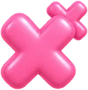
Grosses Mal
etwa 14 × 7
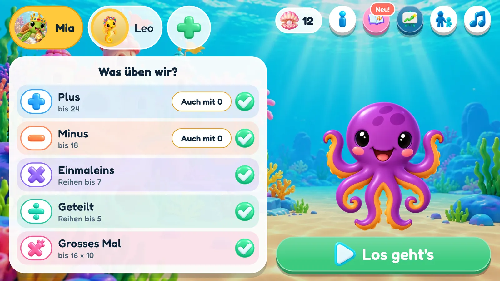
Die Stufe findet das Kind
Niemand muss raten, welche Stufe passt, und niemand muss eine einstellen. Das Spiel schaut, wie jedes Quiz läuft, und passt sich an, ganz nebenbei, während das Kind einfach spielt.
Immer die richtige Schwierigkeit
Jede Rechenart hat ihre eigene Stufe. Sie steigt, wenn dein Kind richtig rechnet, und sinkt wieder, wenn es zu schwer wird.
Knifflige Rechnungen kommen wieder
Das Spiel merkt sich, welche Rechnungen Mühe machen, und fragt sie öfter, die, die dein Kind sicher kann, seltener.
Kein Glückstreffer
Die falschen Antworten zur Auswahl sind Fehler, die Kinder wirklich machen, also muss man die richtige ausrechnen.
Ein faires Rennen
Brainy braucht für ein Quiz etwas länger, als dein Kind sonst braucht. Wer ihn schlägt, war etwas schneller als üblich. Ein schnelles und ein sorgfältiges Kind haben beide ein Rennen, das sie gewinnen können.
Es fängt auch am richtigen Ort an
Ein neues Kind nennt einen Spitznamen und sein Alter, und 8cto wählt, welche Rechenarten das erste Quiz fragt und wie gross die Zahlen sind. Nach ein, zwei Quiz haben die Stufen das Kind gefunden. Das Alter wird einmal gebraucht und nie gespeichert.
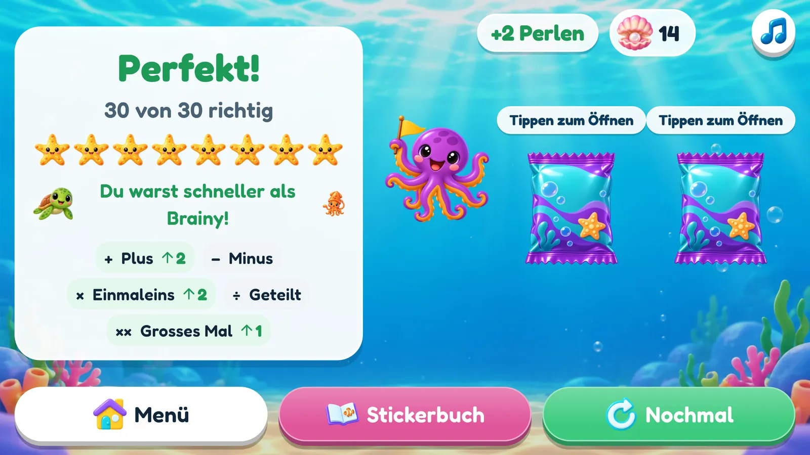
Dafür lohnt sich jeder Zug
Drei Belohnungen, jede mit ihrer eigenen Bedeutung, und ein Laden, in dem sich eine davon ausgeben lässt. Keine davon kann man mit Geld kaufen.
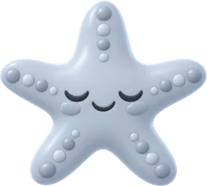
Acht Seesterne
Für jede Marke, die du erreichst, leuchtet einer auf, von der Hälfte richtig bis zu allen dreissig.
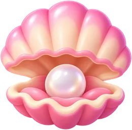
Perlen
Eine für ein Quiz ohne Fehler, eine fürs Schlagen von Brainy. Im Stickerladen ausgeben, oder ein Elternteil löst eine ein, für eine Belohnung, die ihr zu Hause abgemacht habt.
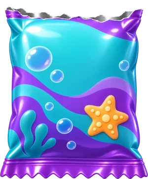
Sticker
Keine Fehler: zwei Sticker. Ein Fehler: immer noch einer. Etwa einer von zwanzig ist ein seltener.
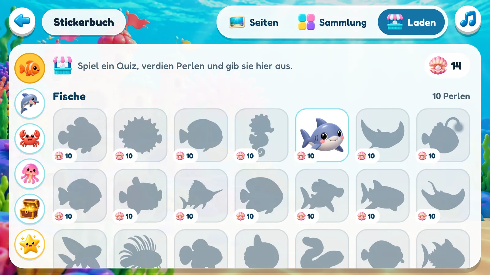
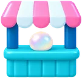
Der Stickerladen
Mit Perlen kauft sich dein Kind genau den Sticker, den es haben will, einen seltenen für deutlich mehr. Jeder Sticker bleibt ein Schattenbild, bis er ihm gehört, so gibt es immer etwas, worauf es sparen kann.
Zweihundert Sticker, acht Seiten
Die Sticker sind die Sammlung. Einen auf eine Seite ziehen, drehen, spiegeln, grösser machen, die ganze Seite im Vollbild ansehen. Die Seite gehört dem Kind, und sie bleibt, wie es sie verlassen hat.
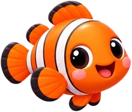
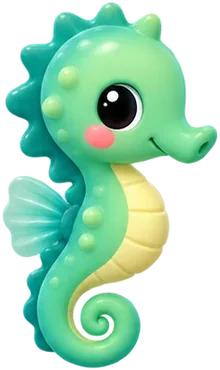
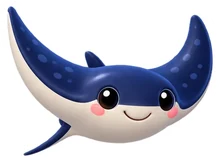
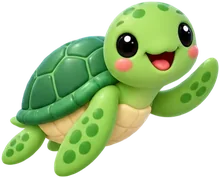
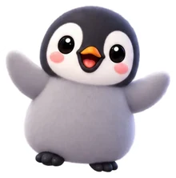
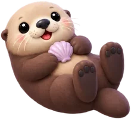
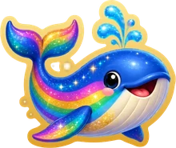
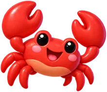
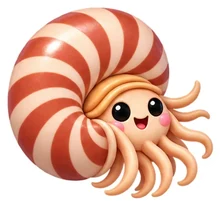
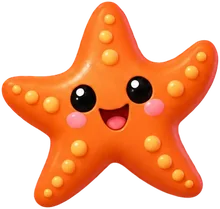
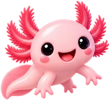
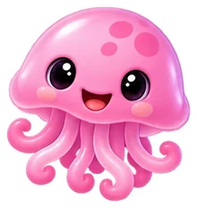
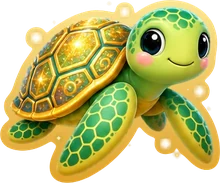
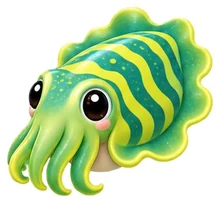
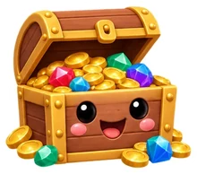
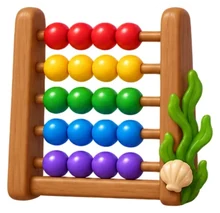
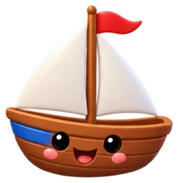
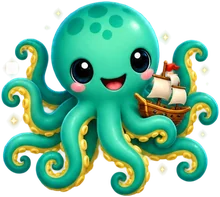
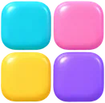
Fünf Familien
Fische · Flossen & Federn · Scheren, Schalen & Sterne · Wabbelig & leuchtend · Schätze & Sachen. Sechsunddreissig in jeder, und die Sammlung zählt die doppelten mit.
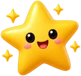
Zwanzig seltene
Eine goldene Schildkröte, ein Baby-Krake, ein Regenbogenwal, eine Meerjungfrau. Mit 8ctoMath+ kommt etwa jeder zwanzigste gewonnene Sticker aus dieser Reihe.
Geschwister
Kinder auf demselben Gerät können einander Sticker schenken. Einen doppelten, oder genau den, den das andere schon lange sucht.
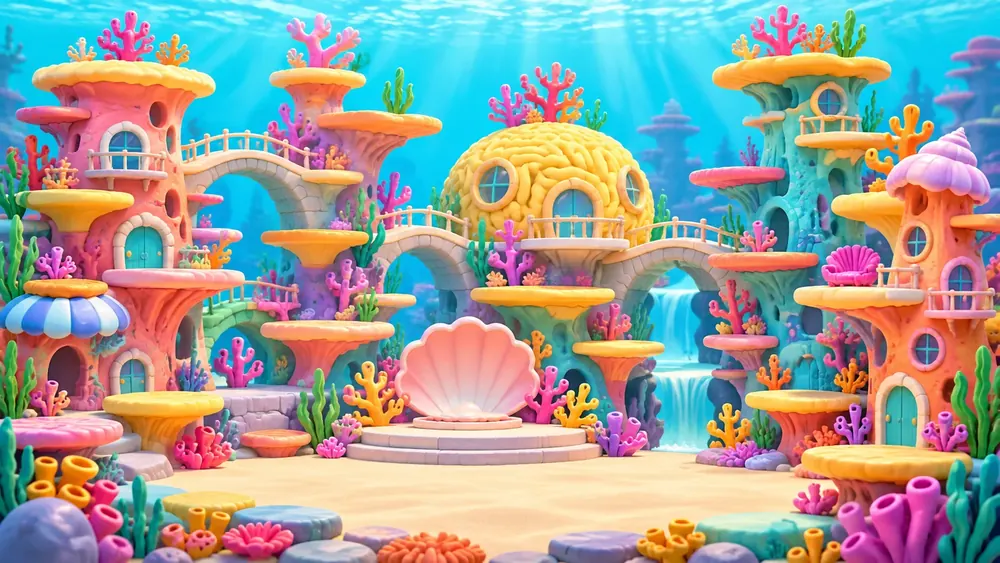
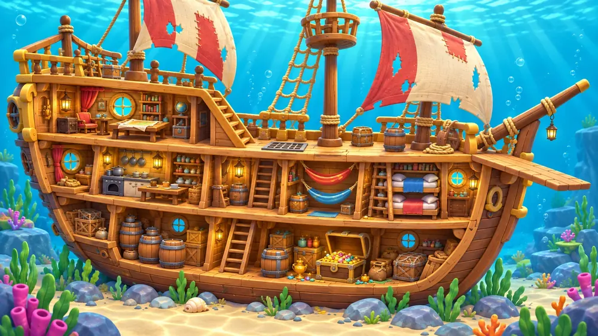
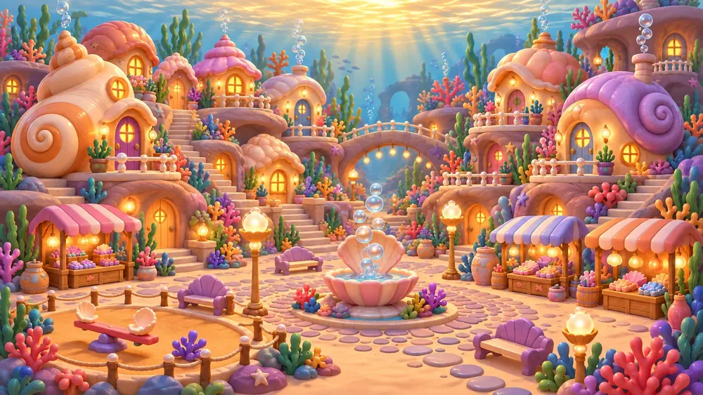
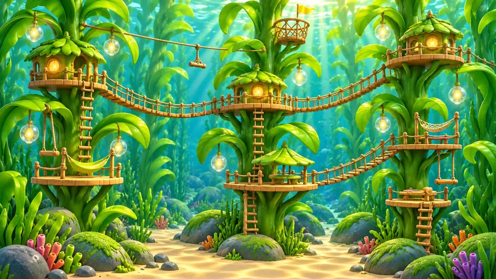
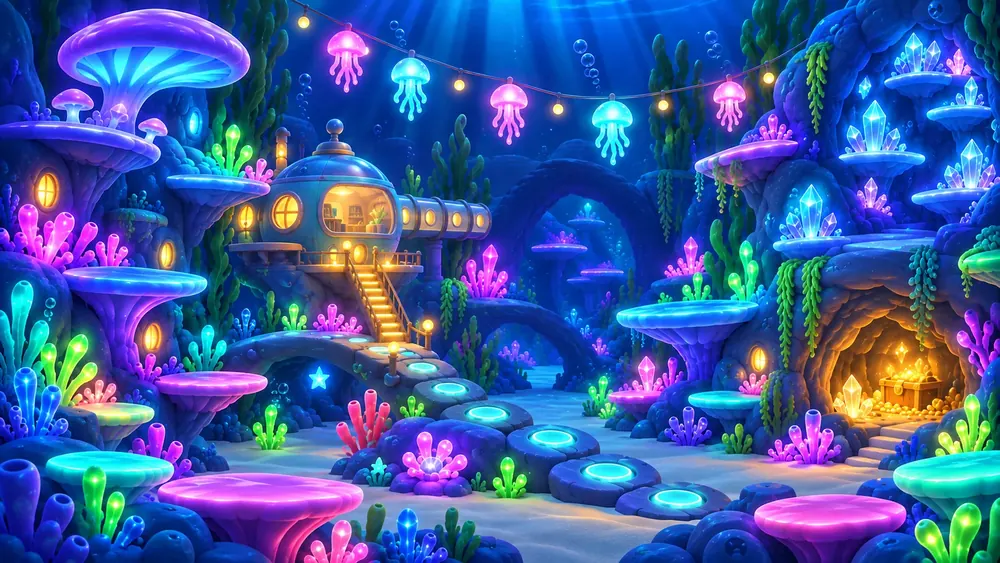
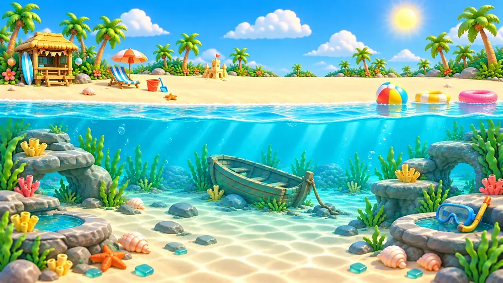
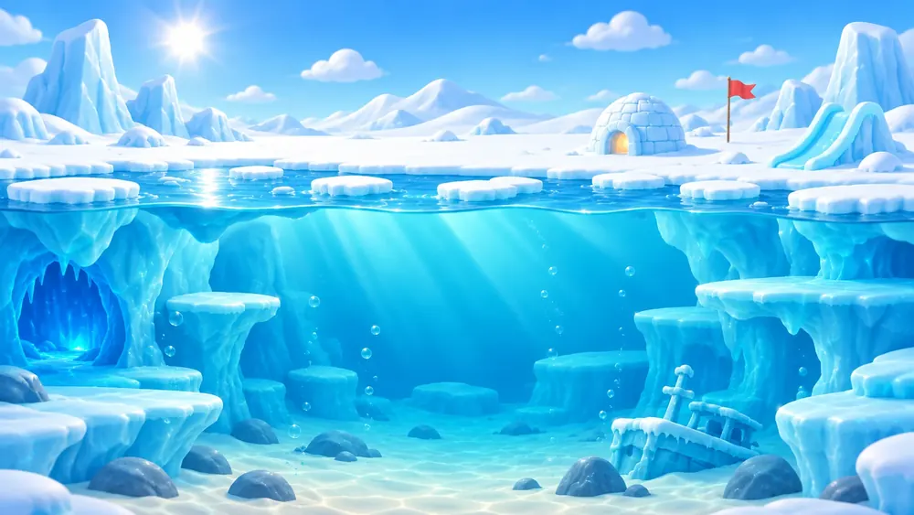

Sei dein eigenes Tier
Jedes Kind baut sich ein eigenes Bild: ein Meerestier, einen Hut, ein Ding zum Halten, einen Hintergrund und eine Randfarbe. Es sitzt auf seinem Knopf im Menü, und es ist das Tier, das im Rennen schwimmt.
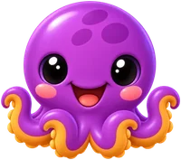
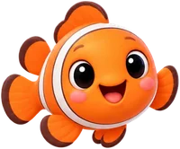
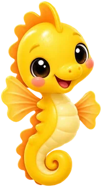
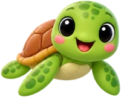
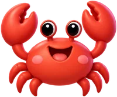
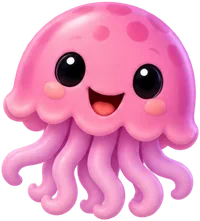
Zwanzig Tiere
Ein Clownfisch, ein Seepferdchen, ein Otter, ein Hai, ein Walross, ein Axolotl. Sogar 8cto. Neun Hüte, neun Dinge, neun Hintergründe und ein «Überrasch mich» für alle, die sich nicht entscheiden können.
Seltene Sticker öffnen seltene Gesichter
Wer den Sticker der goldenen Schildkröte hat, kann die goldene Schildkröte sein. Zwanzig Porträts, eines für jeden seltenen Sticker, und nur der Sticker öffnet sie.
Selbst im Rennen
Das Tier, das ein Kind gewählt hat, schwimmt gegen Brainy, Zug um Zug, während 8cto von der Seite trainiert.
8cto und Brainy sprechen
Die Figuren bewegen sich, und sie reden. 8cto jubelt bei einer richtigen Antwort, leidet bei einer falschen mit und meldet sich, wenn ein Kind still geworden ist. Brainy jubelt oder schmollt im Ziel. Echte Stimmen, auf Deutsch oder Englisch.
Stimmen
Dutzende Sätze, so dauert es eine Weile, bis dein Kind alle gehört hat.
Musik und Geräusche
Eine eigene Melodie für das Spiel und ein Musikknopf auf jedem Bildschirm. Die Soundeffekte lassen sich getrennt ausschalten.
Ruhige Bewegungen
Weniger Animationen, für Kinder, die Bewegung ablenkt. Die Figuren bleiben, die Schnörkel gehen.
Gemacht für Tablets
Querformat, grosse Knöpfe und für den Spitznamen eine eigene Buchstabentastatur statt der Systemtastatur. Läuft auch gut auf dem Handy.
Für Eltern
Alles für Erwachsene liegt hinter einem kleinen Tor: eine Zahl in Worten, die in Ziffern einzutippen ist. Leicht für dich, öde für Sechsjährige.
Bis zu sechs Kinder
Ein Gerät, eine Familie. Jedes Kind hat seine eigenen Stufen, Perlen, Sticker und sein eigenes Bild.
Eine PIN für jedes Kind
Vier Ziffern, die sich ein Kind aussuchen kann, damit niemand sonst als es spielt. Vergessen? Du entfernst sie.
Fortschritt für jedes Kind
Geübte Tage und die Serie, Minuten, jede Stufe im Verlauf und die Rechnungen, die noch knifflig sind. Kinder können ihn auch selbst ansehen.
Eine tägliche Erinnerung
Auf Wunsch erinnert 8cto einmal am Tag die Kinder, die noch nicht gespielt haben, zu einer Uhrzeit deiner Wahl.
Stufen von Hand
Sie bewegen sich von selbst, aber ist eine klar zu leicht oder zu schwer, kannst du sie selbst einstellen.
Perle einlösen
Nimm eine Perle vom Stapel, wenn du zu Hause einlöst, was sie wert war.
Abgleich
Melde dich an, und die Familie ist auf jedem Gerät dieselbe, mit einer Sicherung in der Schweiz. Teil von 8ctoMath+.
Deutsch oder English
Folgt dem Gerät, oder du wählst. Die ganze App, auch die Stimmen, in beiden Sprachen.
Nichts verlässt das Gerät
8ctoMath ist für Kinder, also sammelt es nichts. Es ist ein ganzes Spiel, auch im Flugmodus.
- ✓Keine Werbung und nichts, was ein Kind kaufen kann. Der eine Kauf liegt hinter dem Tor für Erwachsene.
- ✓Keine Analyse, kein Tracking, keine Werbe-ID, keine Absturzberichte.
- ✓Keine Kamera, kein Mikrofon, kein Standort, keine Kontakte, Fotos oder Dateien.
- ✓Ein Spitzname statt eines Namens. Kein Geburtstag, keine E-Mail, kein Foto. Das Alter wird einmal gebraucht und nie gespeichert.
- ✓Läuft offline und braucht kein Konto. Der Abgleich ist freiwillig, und seine Sicherung liegt in der Schweiz.
- ✓Ein Kind oder alles zu löschen braucht nur ein paar Fingertipps, und es ist überall weg.
Alle Einzelheiten stehen in der Datenschutzerklärung, und wie sich Daten löschen lassen, steht unter Daten löschen.
Die Mathematik ist gratis. Die Extras sind ein Kauf.
Die Gratisversion hat die ganze Mathematik: alle Rechenarten, das Rennen und die Stufen, die deinem Kind folgen, sind gleich. 8ctoMath+ öffnet den Rest der Sammlung. Ein Kauf, kein Abo, für alle Kinder auf dem Gerät.
8ctoMath
Das ganze Spiel, für bis zu sechs Kinder.
- Alle fünf Rechenarten, das Rennen und die Stufen, die sich anpassen
- Seesterne, Perlen, der Stickerladen und Geschenke zwischen Kindern
- Die ersten fünf Sticker jeder Familie
- Zwei Seiten im Stickerbuch: das Korallenriff und das Schiffswrack
- Fünf Tiere und ein paar Hüte, Dinge und Hintergründe
- Der Fortschritt jedes Kindes über die letzten sieben Tage
- PINs, die tägliche Erinnerung, der Elternbereich, Deutsch und Englisch
8ctoMath+
Alles aus der Gratisversion, und der Rest des Meeres.
- Alle zweihundert Sticker, auch die zwanzig seltenen
- Alle acht Seiten im Stickerbuch
- Alle Tiere, Hüte, Dinge und Hintergründe
- Der ganze Fortschritt jedes Kindes, nicht nur die letzten sieben Tage
- Abgleich: eine Sicherung der ganzen Familie, auf dem gleichen Stand auf jedem Gerät, das mit demselben Konto angemeldet ist
- Für alle Kinder auf dem Gerät, und es bleibt deins
Gekauft über Google Play, hinter dem Tor für Erwachsene. Was ein Kind verdient hat, wird ihm nie weggenommen: ein Gesicht, das es gebaut hat, und eine Seite, die es beklebt hat, bleiben seine.
Komm und schwimm gegen Brainy.
8ctoMath gibt es gratis bei Google Play, für Android-Tablets und -Handys. Fragen, Ideen, eine Rechnung, die nicht stimmt? Schreib uns.